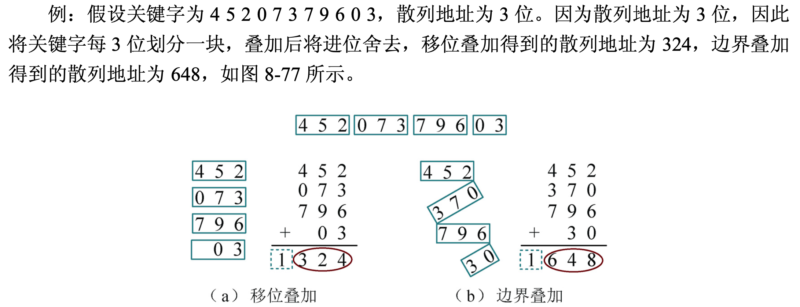
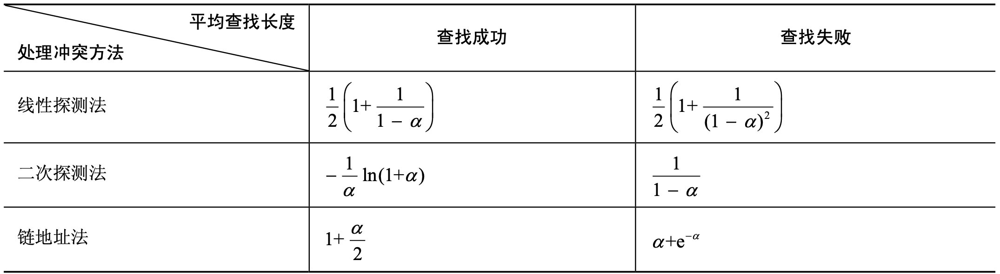

基本理论
线性表和树表的查找都是通过比较关键字的方法，查找的效率取决于关键字的比较次数，而散列表是根据关键字的值直接进行访问。
基本思想：建立从关键字到存储地址（数组下标、内存地址等）的映射：
不同的关键字可能会映射到同一个地址（将这些关键字称为同义词），此时称发生了“冲突”。
散列表查找的时间复杂度与表中的元素个数无关，理想情况下时间复杂度为 \(O(1)\)。为降低冲突率，通常会开辟更多的空间来存储各元素，因此散列表的空间利用率较低（以空间换时间）。
散列函数¶
设计散列函数时应考虑到执行速度（即计算哈希值所需的时间）、关键字的长度、散列表的大小、关键字的分布情况、查找频率等因素。一个优秀的散列函数应满足：
- 简单：能够快速计算出关键字的散列地址
- 均匀：所映射到的地址应均匀分布整个地址空间，避免聚集，以减少冲突
常见的散列函数有：
-
直接定址法：直接取元素关键字的线性函数值作为哈希值 \(hash(x)=kx+b\)
该方法不会产生冲突，但仅适用于关键字集合已知且连续性较好。关键字如果不连续，则会有大量空位，造成空间浪费。
-
数字分析法：根据每个数字在各个位上的出现频率，选择均匀分布的若干位作为哈希值。
（需要事先知道关键字集合）
-
平方取中法：把元素关键字的平方的其中几位作为哈希值
由于一个数经过平方后，每一位数字都与该数的每一位相关，因此采用平方取中法得到的哈希值与元素的每一位都相关，使之有了较好的分散性，从而减少冲突的发生。
-
除留余数法：对元素取余，将得到的余数作为哈希值。
除数最好取不大于表长的最大质数。在实际应用中，数据往往具有某种周期性，若周期与除数有公共的质因子，则冲突的概率将急剧上升（除数的质因子越多，发生冲突的概率越大），因此选择质数作为除数可以减少冲突。
-
折叠法：将关键字从左到右分割成位数相等的几部分（最后一部分的位数可以不同），将这几部分叠加求和，取后几位作为哈希值。可分为：
- 移位折叠：将分割后每一部分的最低位对齐；
- 边界折叠：将两个相邻的部分沿边界来回折叠，然后对齐相加。

冲突处理¶
所谓冲突处理，就是在有冲突发生时，为产生冲突的关键字找到另一个地址存放该关键字。
创建散列表和查找散列表都会遇到冲突，两种情况下处理冲突的方法应该一致。
常用方法有：
-
开放定址法：利用哈希表（设表长为 \(m\)）中的空地址存储产生冲突的关键字，当冲突发生时按照下列公式（探测函数）处理：
\[ h_i=[\text{hash}(key)+d_i]\mod m \]其中 \(d_i\) 是地址增量，可以通过以下 3 种方法获得：
-
线性探测：\(d_i\) 依次取自然数列 \(1,2,...,m-1\)。即遇到冲突时不断后移，直到可以存。
线性探测法很简单，只要有空间，就一定能够探测到位置。但是在处理冲突的过程中可能会产生“聚集”（又称为“堆积”）现象：非同义词之间也对同一个散列地址发生争夺，降低了查找效率。
-
二次探测：\(d_i\) 依次取自然数的平方 \(1^2,-1^2,2^2,-2^2,...,k^2,-k^2\)（\(k\le\frac{m}{2}\)） 。即前后跳跃式探测。
-
伪随机数探测：\(d_i\) 依次取伪随机数序列。
二次探测、伪随机数探测法避免了“堆积”，效率较高。但可能会出现明明有空间却探测不到，导致存储失败的情况。
以上 3 种方法可以统一为“再散列法”：地址增量用另一个散列函数来求出，即 \(d_i=\text{hash}_2(key)\)。
注意
使用开放定址法时，不能随便删除表中的元素，因为可能会截断其他元素的查找（在查找过程中，遇到空就会返回查找失败），因此若要删除一个元素，可以做一个删除标记，标记其已被删除。查找过程中遇到“删除标记”时，仍应继续向后查找。
-
-
链地址法（拉链法）：将具有相同哈希值的关键字用一个单链表存储起来（“同义词”链表）。若有 \(m\) 种散列结果，就设置 \(m\) 个单链表，并用一个顺序表将这 \(m\) 个单链表的表头指针存储起来。
由于散列地址不同的记录在不同的链表中，因此拉链法的平均查找长度小于开放地址法，且不存在“聚集”现象。缺点是存储效率较低（需要额外存储指针域）。
拉链法适用于经常进行插入、删除的情况，查找、插入、删除操作主要在相应链表中进行。
-
建立公共溢出区：发生冲突时将关键字放入公共溢出区中。
散列表的查找¶
采用开放定址法¶
给定关键字 x，计算出对应的散列地址：
- 若该地址处的元素就是 x，则查找成功；
- 若该地址处的元素非空且不是 x，则根据冲突处理方式查找下一个散列地址；
- 如该地址处元素为空或探测一遍后仍未找到，则说明查找失败。
平均查找长度的求法：
- 查找成功的平均查找长度：枚举表中所实际存储的各元素，判断要找到该元素需要经过几次比较。
- 查找失败的平均查找长度：假设散列函数的取值个数为 \(r\)（注意不是散列表的容量），则 \(0\sim r − 1\) 相当于 \(r\) 个入口，从每个入口进入后，直到确定查找失败为止，所进行的关键字比较次数就是与该入口的查找失败长度。所有入口的查找失败长度的平均值即查找失败的平均查找长度。
例题

-
查找成功的平均查找长度 （从查找序列出发）
从表中可知有 7 个关键字仅需 1 次比较即可查找成功，有 2 个关键字需比较 2 次才可查找成功，有 2 个关键字需比较 3 次才可查找成功，有 1 个关键字需比较 9 次才可查找成功。因此查找成功的平均查找长度为：
\[ ASL_1=\frac{7\times 1+2\times 2+2\times 3+1\times 9}{12}=\frac{4}{3} \] -
查找失败的平均查找长度
散列结果有 \(0,1,...,12\)，共有 \(13\) 种情况。（从所有散列结果出发）
若散列结果为 \(0\)，则要想确定查找失败，需要一直比较，直到发现地址 \(7\) 处空，共比较了 \(8\) 次； 若散列结果为 \(1\)，则需要比较 \(7\) 次才能确定查找失败； 若散列结果为 \(2\)，则需要比较 \(6\) 次...
因此查找失败的平均查找长度为：
\[ ASL_2=\frac{8+7+6+5+4+3+2+1+2+1+2+1+11}{13}=\frac{53}{13} \]
采用拉链法¶
给定关键字 x，计算出对应的散列地址，到对应的单链表中进行顺序查找。
例题
-
查找成功的平均查找长度
从表中可以看出 1 次比较成功的有 8 个关键字，2 次比较成功的有 2 个，3 次比较成功的有 1 个，4 次比较成功的有 1 个。因此：
\[ ASL_1=\frac{8\times 1+2\times 2+1\times 3+1\times 4}{12}=\frac{19}{12} \] -
查找失败的平均查找长度
若散列结果 x 对应的单链表长度为 \(l\)，则需要比较 \(l+1\) 次才能确定查找失败。因此：
\[ ASL_2=\frac{2+3+2+2+1+1+2+1+2+1+2+1+5}{13}=\frac{25}{13} \]
采用建立公共溢出区¶
查找时，先根据待查找关键字的散列地址，在散列表中查找：
- 如果为空，则查找失败
- 如果非空且关键字不相等，则到公共溢出区中查找。如果仍未找到，则查找失败。
性能分析¶
散列表的查找效率用 ASL 来衡量，取决于 3 个因素：
-
散列函数：影响出现冲突的频繁程度。
-
装填因子：\(\alpha=\dfrac{表中填入的记录数}{散列表容量}\)
装填因子反映散列表的装满程度，\(\alpha\) 越大，发生冲突的可能性越大，导致平均查找长度增大。
-
处理冲突的方法

上表反映的是查找成功、失败的平均查找长度的数学期望，实际具体计算时不能套此公式。不过从上表可以看出：散列表的平均查找长度与装填因子有关，而与关键字个数无关。不管关键字个数有多大，都可以选择一个合适的装填因子，将平均查找长度限定在一个可接受的范围内。